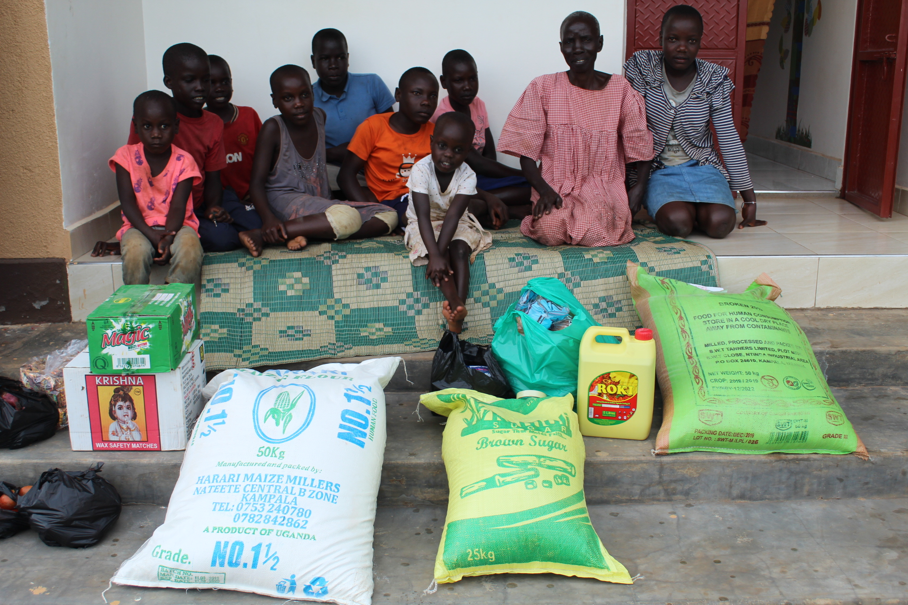

Career Guidance
Provide material assistance in training poor students, to organize educational and educational competitions among students of University.
learn More
Boreholes
Assist commuinities with a shortage of cleand and realiable water supply, by distributing boreholes to these areas
learn More
Dhuhia Program
Assist poor families and those in need of distributing meat of sacrificial animals during the holidays of Kurban-Bayram (Eid al-Adha).
learn More

Community Outreach
Assist the communities ( families and orphans) of Uganda by providing different items to the needy homesteadies.
learn More